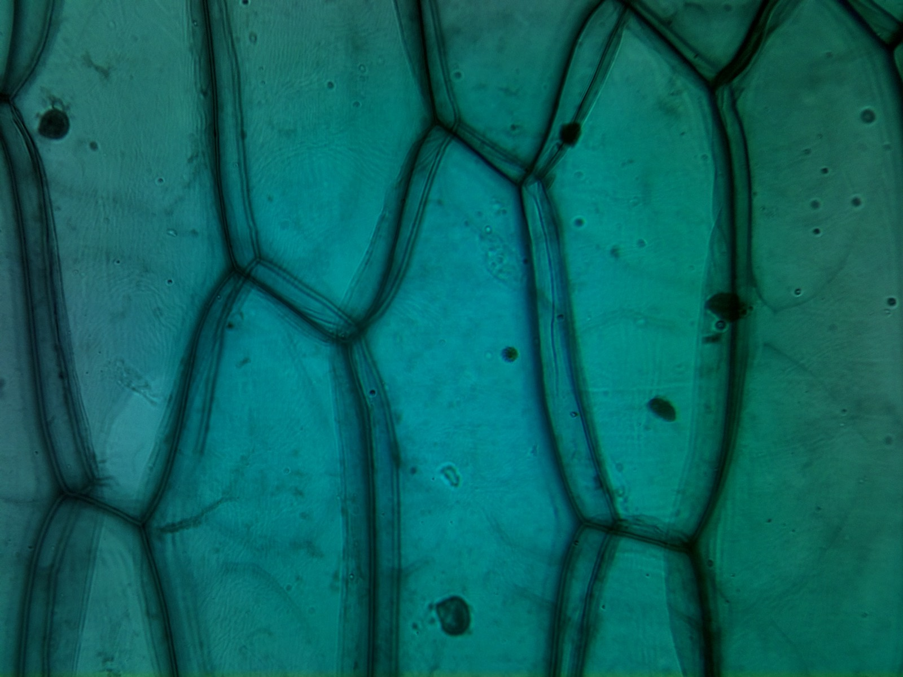
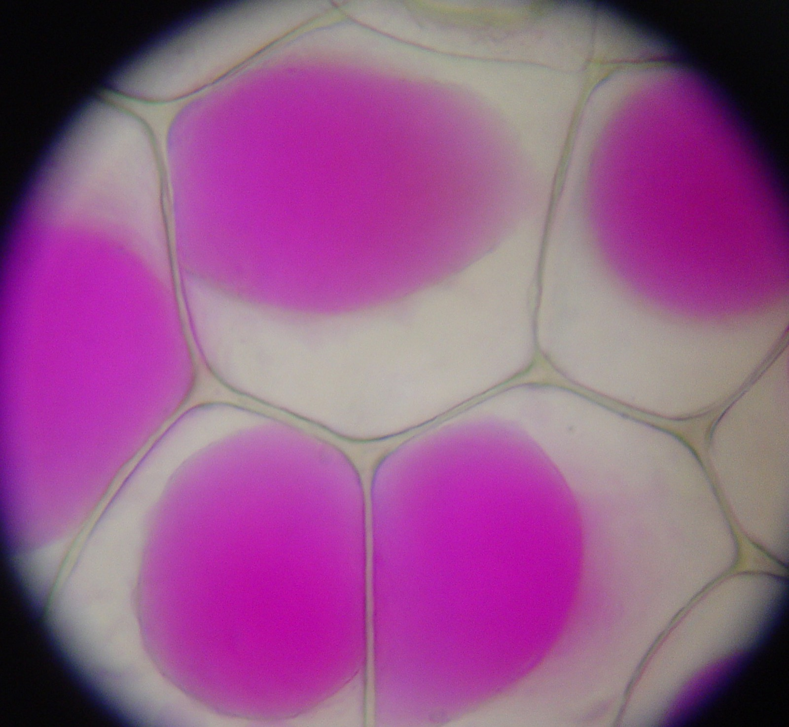
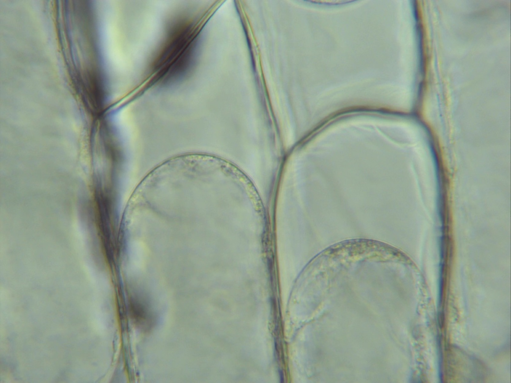

1.1 The Cell Membrane
A cell membrane separates a cell from its surroundings. Water, oxygen and nutrients cross it, and many other substances cannot. What crosses depends on how the membrane is built.
By the end of this chapter you should be able to
- Describe the arrangement of phospholipids in a membrane, and explain why they form that arrangement.
- Explain why small non-polar molecules cross a membrane easily while ions and large polar molecules do not.
- Predict the direction of net water movement between a cell and its surroundings from their solute concentrations.
- Use the terms hypertonic, hypotonic and isotonic correctly, and describe the effect of each on an animal cell.
Membrane structure
The basic structure of a cell membrane is made of phospholipids. Each phospholipid has a phosphate head that is attracted to water (hydrophilic) and two fatty acid tails that are not (hydrophobic).
In water, phospholipids form an arrangement with no energy from a cell. The heads face the water and the tails face away from it. The stable arrangement is two sheets placed tail to tail: a phospholipid bilayer.
Phospholipids move sideways past one another, so a membrane behaves like a thin film of oil, not a solid sheet. This is why its structure is called the fluid mosaic model: fluid because its parts move, and mosaic because proteins are scattered through it. Diagrams show only a few proteins, but in most membranes about half the mass is protein.
Selective permeability
The oily core makes the membrane selectively permeable: some substances cross it and others do not.
- Small, non-polar molecules, such as oxygen and carbon dioxide, dissolve in the oily core and cross freely.
- Water is polar, but it is small enough that some passes between the phospholipids. Most cells also have channel proteins called aquaporins that let water cross much faster.
- Ions and large polar molecules, such as sodium ions, potassium ions and glucose, do not dissolve in the oily core. They cross only through transport proteins specific to them.
“A membrane has holes that let small particles through and keep large ones out.”
Size is not the main factor. A sodium ion is smaller than a carbon dioxide molecule, but carbon dioxide crosses the bilayer freely and a sodium ion cannot cross it at all. The difference is chemistry: carbon dioxide is non-polar, and a sodium ion carries a charge.
Diffusion
Particles in a liquid or a gas are always moving in random directions. When a substance is more concentrated in one region than in another, this random motion produces a net movement: over time, more particles move out of the concentrated region than move into it.
This net movement from a higher concentration to a lower concentration is diffusion. The cell spends no energy on it, because the particles are already moving. Diffusion is a form of passive transport.
“Diffusion stops when the concentrations are equal.”
The particles keep moving and keep crossing in both directions. At equal concentrations they cross at the same rate each way, so there is no net movement.
Osmosis
Now consider a cell in a solution of a solute that cannot cross the membrane, such as a salt or a sugar. The solute stays on its own side of the membrane. Water can cross.
There is a net movement of water from the solution with the lower solute concentration to the solution with the higher solute concentration. This is osmosis: the net movement of water across a partially permeable membrane. Water that enters or leaves changes the volume of the cell.
In the simulation below, the yellow solute particles cannot cross the membrane and the blue water particles can. Change the solute concentration outside the cell and observe the cell's volume.
Osmosis across a cell membrane
InteractiveSet the solute outside the cell to 55 units, the same as inside. Predict what will happen to the cell if you raise it to 80 units. Then raise it and observe. Explain why the cell stops shrinking at a certain volume instead of shrinking until it disappears.
Hypertonic, isotonic and hypotonic
These terms describe the solution, always compared with the cell in it:
| Solution is… | Solute concentration, compared with the cell | Net water movement | Effect on an animal cell |
|---|---|---|---|
| Hypertonic | Higher | Out of the cell | Shrinks and wrinkles (crenation) |
| Isotonic | Equal | None (equal in both directions) | Volume stays the same |
| Hypotonic | Lower | Into the cell | Swells and may burst (lysis) |



Intravenous (IV) fluids contain 0.9% saline, not pure water. Pure water is strongly hypotonic to red blood cells, so water would enter them by osmosis and they would burst. A plant cell in pure water swells but does not burst, because its cell wall resists further expansion once the cell is full.
Check your understanding
Oxygen crosses a membrane freely, but a potassium ion cannot, even though the ion is smaller. Explain why.
Oxygen is non-polar, so it dissolves in the oily core of the bilayer and crosses. A potassium ion carries a charge and is attracted to water, so it does not enter the oily core. It crosses only through a channel protein.
A red blood cell is placed in pure water. Describe what happens and explain why.
The cell swells and bursts (lysis). Pure water has no solute, so it is hypotonic to the cytoplasm, and there is a net movement of water into the cell by osmosis. An animal cell has no cell wall to resist the pressure.
In the simulation, once the cell has settled in a hypertonic solution it stops shrinking. Water is still crossing the membrane in both directions. Explain both facts at once.
As water leaves, the solute inside is concentrated into a smaller volume, so the solute concentration inside rises. Shrinking stops when it equals the outside concentration. Water still crosses in both directions, but at equal rates, so there is no net movement.
Quick check
Each question marks your answer. If an answer is wrong, a link takes you to the section that teaches it.
Phospholipids placed in water arrange themselves tail to tail, with no energy input. Why does this happen?
The heads are hydrophilic and the tails are hydrophobic. Two sheets placed tail to tail keep every tail away from the water at once, so this is the arrangement that forms and stays stable.
The fluid inside a cell is watery, and so is the fluid outside it. Using only the properties of a phospholipid, predict where the heads and the tails end up.
Water on both sides explains the structure. Two sheets placed tail to tail is the only arrangement that keeps every tail out of the water, so the bilayer forms with no energy from the cell.
A sodium ion is smaller than a carbon dioxide molecule. Carbon dioxide crosses a membrane freely, but sodium ions cannot cross the bilayer. What does this show?
To cross the bilayer, a substance must dissolve in its oily core. Carbon dioxide is non-polar and dissolves in it. A sodium ion carries a charge, is attracted to water, and does not enter the oily core.
On the scale strip in Figure 1.1, a water molecule is 0.27 nm across and crosses the membrane. A sodium ion is 0.20 nm across and cannot cross the bilayer. What explains the difference?
If you order the five particles by width, there is no pattern: the smallest and the largest are the two that cannot cross the bilayer. Order them by charge and polarity, and the pattern is clear.
Glucose is a small molecule, but it cannot cross a cell membrane directly through the bilayer. Why not?
Glucose, like sodium and potassium ions, is attracted to water, so the oily core stops it. It crosses only where a transport protein provides a route. This is what makes a membrane selectively permeable.
A cell needs to take up potassium ions from the fluid around it. How can they get in?
Potassium ions, like sodium ions and glucose, are attracted to water and stopped by the oily core. Which substances a cell takes in depends on which transport proteins are in its membrane. This is why two cells with the same bilayer can let different substances through.
A drop of dye has spread evenly through a beaker of water. What are the dye particles doing now?
Diffusion continues at equal concentrations. The particles keep moving in both directions at the same rate, so the net movement is zero.
Oxygen diffuses into a cell from the fluid around it until the concentration inside matches the concentration outside. What is happening at that point?
At equal concentrations, oxygen molecules still cross in both directions at equal rates, so there is no net movement. A membrane does not change diffusion, as long as the substance can cross it.
A patient receives pure water through an IV instead of 0.9% saline. What happens to their red blood cells?
Pure water contains no solute, so it is strongly hypotonic to the cytoplasm. Water enters by osmosis, the cells swell, and with no cell wall to resist the pressure, their membranes break. IV fluids use 0.9% saline because it is isotonic to blood.
A red blood cell and a plant cell are placed in pure water. Both take in water. Why does only one of them burst?
Water enters both cells by osmosis for the same reason. The difference is outside the membrane: the cell wall does not keep water out, but it stops the plant cell from expanding further.
A cell is placed in a solution and its volume does not change. Which statement is correct?
Hypertonic, hypotonic and isotonic always describe the solution, compared with the cell in it. A constant volume does not mean water has stopped moving. Water crosses in both directions at equal rates.
A red blood cell shrinks and wrinkles in the solution it has been placed in. Which statement describes what has happened?
The three terms name the solution, never the cell. Crenation is the visible result of a hypertonic solution: the solute cannot cross, so there is a net movement of water out of the cell.